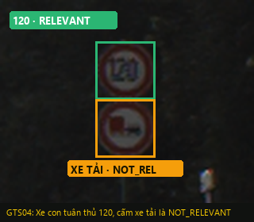
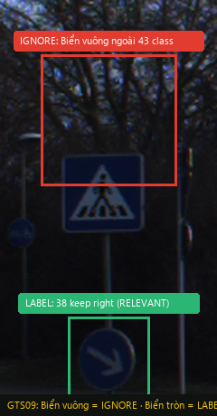
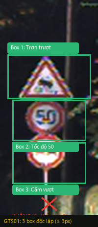
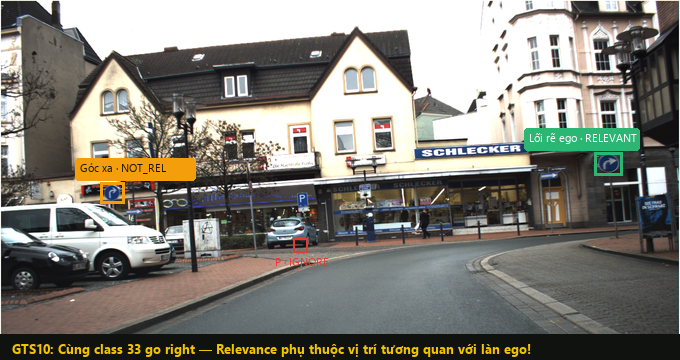
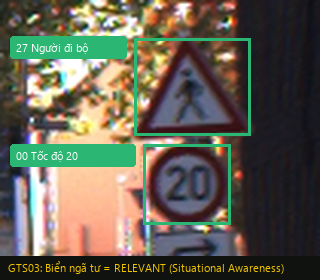
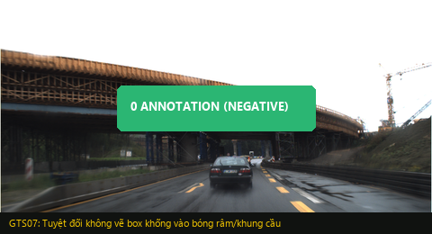

Day 9 · Guideline Design Challenge · Project Defense
Biển Báo Nào Xe Tự Hành Cần Quan Tâm & Tuân Thủ?
Thiết kế chuẩn gán nhãn Ego-Relevance trên bộ dữ liệu đường bộ Đức (GTSDB) phục vụ hệ thống tự hành L2+/L3 ADAS.
Downstream Contract & Bằng Chứng Thực Tế
AI Cần Gì? Và Thất Bại Nào Là Chết Người?
Khách hàng downstream: Hệ thống tự hành L2+/L3 (Module Motion Planning). Xe mục tiêu là xe con chở khách tiêu chuẩn.
Critical Failure 1: False Negative Nguy kịch
Bỏ sót hoặc gán not_relevant cho biển có hiệu lực trực tiếp (STOP 14, Cấm đi vào 17, Tốc độ thấp 20/30) → Xe không giảm tốc, lao vào giao lộ nguy hiểm.
Critical Failure 2: False Positive Phantom Braking
Gán nhầm relevant cho biển cấm xe tải (10 no overtaking (trucks)) → Xe con phanh gấp bất ngờ trên cao tốc hoặc từ chối vượt an toàn, gây tai nạn liên hoàn!

120 (RELEVANT) và biển 10 cấm xe tải vượt (NOT_RELEVANT). Nếu gán nhầm xe tải thành Relevant → Xe con phanh gấp oan uổng!
relevance = unknown + Bật needs_review = true.
Scope & Bằng Chứng Biên Giới Dữ Liệu
Nguyên Tắc Vàng: Chỉ 43 Class GTSDB Mới Được Vẽ Box!
Trong Scope (BẮT BUỘC LABEL) Label
- Mọi biển thuộc đúng 43 class chuẩn GTSDB (mã
00đến42). - Kích thước ≥ 10 × 10 pixels, hướng mặt về phía xe ego.
- Vị trí: Bên phải, bên trái, trên đảo giao thông, dải phân cách giữa.
Ngoài Scope (TUYỆT ĐỐI IGNORE) 0 Box
- Biển chỉ dẫn địa danh, khoảng cách: Bảng xanh chữ trắng ("Berlin 120 km", "Ausfahrt"...).
- Biển bãi đỗ xe P, biển một chiều: Nằm ngoài 43 class.
- Biển phụ (Zusatzzeichen): Biển phụ nhỏ dưới biển chính.
- Ảnh âm tính không có biển (
GTS07,GTS24) → 0 box!

IGNORE (0 box) vì ngoài 43 class. Biển tròn mũi tên 38 keep right trên đảo cắm bên dưới là LABEL (RELEVANT)!
11, 12, 13, 14) và hết hạn chế (06, 32, 41, 42). Tuyệt đối không gán biển chỉ dẫn vuông vào nhóm này!
Cơ Chế Phân Quyết
Bộ Ba Khác Biệt: IGNORE vs NOT_RELEVANT vs RELEVANT
1. IGNORE 0 Box
Hành động: KHÔNG vẽ bounding box.
Đối tượng áp dụng:
- Nằm ngoài danh mục 43 class GTSDB.
- Biển tên thành phố, biển P, biển một chiều, biển phụ dưới chân.
- Mặt sau của biển quay lưng lại.
- Biển quá nhỏ < 10 × 10 px hoặc che khuất 100%.
2. NOT_RELEVANT Vẽ Box
Hành động: Vẽ box nhưng gán relevance: not_relevant.
Đối tượng áp dụng:
- Thuộc 43 class nhưng dành cho xe tải (
10 cấm xe tải vượt,16 cấm xe tải). - Biển cắm ở nhánh gom, đường rẽ phụ mà ego không đi vào.
- Biển ở góc xa thuộc luồng cắt ngang ngã tư.
3. RELEVANT Bắt buộc
Hành động: Vẽ box và gán relevance: relevant.
Đối tượng áp dụng:
- Khống chế trực tiếp làn ego đang di chuyển.
- Cắm trên dải phân cách/đảo giao thông phía trước (
38 keep right). - Cặp biển đối xứng cắm cả hai bên đường (cao tốc/đường một chiều).
- Biển an toàn ngã tư (người đi bộ
27, tốc độ thấp20/30).
Quy Chuẩn Hình Học & Bằng Chứng GTS01
Tight Bounding Box & Kiểm Soát Dung Sai Hình Học
Dung sai hình học ≤ 3 Pixels
- Tight Boundary: Box phải ôm khít viền ngoài cùng của mặt biển hiển thị.
- Không phụ kiện: Tuyệt đối không kéo box trùm qua chân cột đỡ, thanh giằng kim loại, giá treo hoặc khoảng trống nền trời.
- Tách rời Instance: Mỗi biển vật lý là 1 box độc lập. Nếu 1 cột treo 3 biển xếp dọc (như
GTS01), phải vẽ 3 box riêng biệt, cấm vẽ 1 box gộp!
Thuộc Tính CVAT Bắt Buộc (No undefined)
| Thuộc tính | Giá trị | Mục đích |
|---|---|---|
relevance | relevant, not_relevant, unknown | Hiệu lực xe con |
sign_family | prohibitory, mandatory, danger, other | Phân loại họ |
sign_class | Mã 00 → 42 hoặc unknown | Mã chi tiết |
readable | yes, no, uncertain | Chất lượng nhìn |
Cấm đoán mò số: Khi readable = no → sign_class = unknown. Tuyệt đối không đoán số!

Thực Nghiệm Hiệu Chuẩn & Bằng Chứng GTS10
4 Bài Học Xương Máu Từ Dữ Liệu Calibration Thực Tế

33 go right nhưng vị trí tương quan quyết định Relevance: Biển đón đầu làn ego rẽ phải = RELEVANT; Biển ở góc xa đối diện = NOT_RELEVANT. Biển chữ P = IGNORE!
| Mẫu | Bất đồng phát hiện | Nguyên nhân gốc rễ | Phán quyết chuẩn hoá (Guideline) |
|---|---|---|---|
GTS04 |
Gán relevant cho biển cấm xe tải 10 no overtaking (trucks) |
Thấy cắm bên phải đường là nghĩ xe nào cũng phải tuân thủ | not_relevant Xe ego là xe con, không chịu hiệu lực cấm xe tải. |
GTS03 |
Tranh cãi biển 27 pedestrian crossing cắm tại ngã tư xa |
Nghĩ xe đi thẳng qua ngã tư không rẽ thì không cần quan tâm | relevant Situational Awareness: Nguy cơ người đi bộ tràn ra đường. |
GTS01 |
Vẽ 1 box to gộp cả cụm 3 biển và chân cột | Thói quen tiện tay gom nhóm | Tách rời box Bắt buộc tách 3 box riêng biệt ôm khít từng biển. |
Thư Viện Ca Biên & Bằng Chứng GTS03/GTS07
13 Quyết Định Gold Đóng Băng & 8 Edge-Case Cards
Bao phủ 100% 7 chiều đa dạng theo yêu cầu kỹ thuật nghiêm ngặt:
EC-07 · GTS22 Critical
STOP hai bên ngã tư: 2 box độc lập cho 2 biển STOP đều là relevant, không để lọt biển sống còn.
EC-03 · GTS09 Edge
Biển trên đảo: Biển 38 keep right cắm mũi đảo bên trái khống chế hướng đi ego → relevant.
EC-05 · GTS06 Small Far
Biển mờ xa: Gán họ prohibitory, readable = no, sign_class = unknown. Cấm đoán mò số.
EC-06 · GTS10 Spatial
Cùng class khác vị trí: Relevance quyết định theo vị trí so với làn ego, không suy theo loại biển.
FREEZE.txt với mã SHA256 và tag git gold-freeze!

27 & 20 ở ngã tư → RELEVANT (Situational Awareness).
0 box, chống False Positive!Kế Hoạch Đảm Bảo Chất Lượng (Gate G5)
Hệ Thống Quality Gates & Quy Chuẩn Lọc Lỗi Đa Tầng
Phân Cấp Mức Độ Nghiêm Trọng Của Lỗi (Defect Severity)
- Critical: Đổi quyết định sống còn của xe (Bỏ sót biển STOP/Cấm vào; hoặc gán relevant cho biển xe tải gây phanh gấp) → Rework ngay lập tức, chặn release batch!
- Major: Sai mã biển, nhầm họ biển hoặc box lệch > 5 px → Rework trong vòng 24 giờ.
- Minor: Lệch viền 2–3 px, nhầm
readablenhẹ → Chấp nhận hoặc sửa nhanh. - Question: Tình huống bất thường chưa có tiền lệ → Bật
needs_reviewchuyển Spec Owner xử lý.
Tiêu Chuẩn Nghiệm Thu Quality Gate (Batch PASS Criteria)
Số lượng thuộc tính __undefined__ còn lại = 0.
Chuyển Giao & Cải Tiến Thực Chiến (Gates G5 - G6)
Kết Quả Thử Mù Mixigaming & Bước Nhảy Vọt Guideline v3
Thực Chiến Blind Test (Đối tác: Nhóm Mixigaming)
- Người gán nhãn thử nghiệm: Bạn Cẩm Vũ Ngọc Thạch (Nhóm Mixigaming).
- Tính tự thân hoàn hảo: Chỉ số độc lập I = 100/100 (0 câu hỏi phát sinh trong suốt 15 phút thử mù).
- Điểm mạnh: Mục 4.1 và các ví dụ mã biển giúp peer gán nhãn
relevantcực nhanh và chuẩn xác cho mọi biển thực tế. - Bất đồng phát hiện: Cụm biển chỉ hướng nhiều panel (
GTS21) gây lúng túng; và defaultuncertaincủareadabletrong CVAT dễ bị bỏ quên.
Các Cải Tiến Đã Đưa Vào Guideline v3 Chính Thức
- Khóa chặt Scope: Biển chỉ hướng, địa danh, route number (bất kể màu nền, kể cả cụm nhiều panel như
GTS21) đều làIGNORE (0 box). - Chống nhầm họ biển: Nhấn mạnh
13 give wayvà11 prioritythuộc họother, tuyệt đối không suy thànhdangertheo hình tam giác. - Chủ động chọn
readable: Annotator bắt buộc chủ động đánh giá độ rõ, không ỷ lại giá trị mặc định của CVAT. - Kỷ luật đóng băng Gold: Chấp nhận điểm GTS theo đúng quy chế freeze; dũng cảm thừa nhận và ghi chú 11 dòng
gold sai:để cải tiến quy trình.
Tổng Kết & Bài Học Đắt Giá
Guideline Rõ Ràng Là Nền Tảng Của Dữ Liệu Sạch
1. Downstream là kim chỉ nam
Gán nhãn không phải là bài tập hình họa. Mọi nhãn vẽ ra đều là đầu vào điều khiển một chiếc xe 2 tấn di chuyển trên đường thực tế.
2. Không để lại luật ẩn
Bất kỳ điều gì "ngầm hiểu" giữa các thành viên mà không được viết thành chữ trong Guideline đều sẽ sụp đổ khi bàn giao cho người lạ (Blind Peer Test).
3. Lỗi Critical chặn đứng hệ thống
Độ chính xác trung bình 95% là vô nghĩa nếu 5% còn lại rơi vào việc bỏ sót biển STOP hoặc gây phanh gấp hàng loạt trên cao tốc.
Xin chân thành cảm ơn Thầy Cô và các Bạn!
Nhóm 1 sẵn sàng đón nhận câu hỏi phản biện từ Nhóm 2 và Hội đồng.